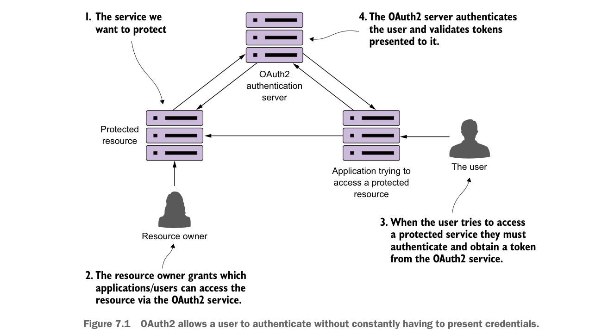

- Chủ sở hữu tài nguyên—Chủ sở hữu tài nguyên xác định ứng dụng nào được phép gọi dịch vụ của họ, người dùng nào được truy cập dịch vụ, và họ có thể làm gì với dịch vụ đó. Mỗi ứng dụng được chủ sở hữu tài nguyên đăng ký sẽ được cấp một tên ứng dụng để nhận diện ứng dụng cùng với một khóa bí mật ứng dụng. Sự kết hợp giữa tên ứng dụng và khóa bí mật là một phần thông tin xác thực được truyền khi xác thực token OAuth2.
- Một ứng dụng—Đây là ứng dụng sẽ gọi dịch vụ thay mặt người dùng. Rốt cuộc, người dùng hiếm khi gọi trực tiếp một dịch vụ. Thay vào đó, họ dựa vào một ứng dụng để làm việc đó cho họ.
- Máy chủ xác thực OAuth2—Máy chủ xác thực OAuth2 là trung gian giữa ứng dụng và các dịch vụ đang được sử dụng. Máy chủ OAuth2 cho phép người dùng xác thực mà không phải truyền thông tin xác thực của họ xuống mọi dịch vụ mà ứng dụng sẽ gọi thay mặt người dùng.
Bốn thành phần tương tác với nhau để xác thực người dùng. Người dùng chỉ cần trình bày thông tin xác thực của họ. Nếu xác thực thành công, họ được cấp một token xác thực có thể được truyền từ dịch vụ này sang dịch vụ khác. Điều này được minh họa trong hình 7.1.

OAuth2 cho phép người dùng xác thực mà không phải liên tục trình bày thông tin xác thực.
OAuth2 là một framework bảo mật dựa trên token. Người dùng xác thực với máy chủ OAuth2 bằng cách cung cấp thông tin xác thực cùng với ứng dụng họ đang dùng để truy cập tài nguyên. Nếu thông tin xác thực của người dùng hợp lệ, máy chủ OAuth2 cung cấp một